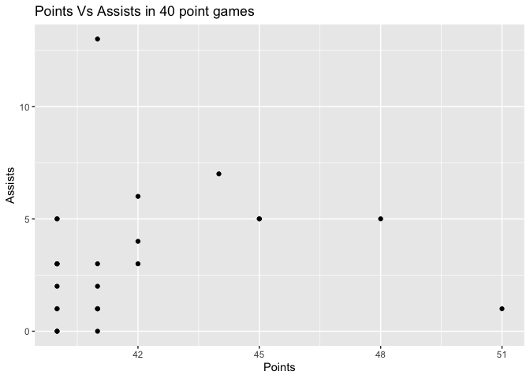

usportsR is a package that is designed to provide users with data from all U SPORTS sanctioned sports.
The package contains U SPORTS data spanning over a decade of pre-season, regular season, and post-season matches.
Sports currently included are Soccer, Basketball, Ice Hockey, Field Hockey, Track and Field Field Hockey, Football, Wrestling, Swimming and Rugby
We currently provide access to box score, play-by-play, schedules and rankings data
Installation
You can install the development version of usportsR from GitHub with:
# install.packages("devtools")
devtools::install_github("uwaggs/usportsR")Example
This is a basic example which shows you how to solve a common problem:
library(usportsR)
library(dplyr)
#>
#> Attaching package: 'dplyr'
#> The following objects are masked from 'package:stats':
#>
#> filter, lag
#> The following objects are masked from 'package:base':
#>
#> intersect, setdiff, setequal, union
## basic example to find number of 40+ point games in the last decade
mens_player_box_scores <- basketball_player_box_score("m",c(2023,2022,2021,2019,2018,2017,2016,2015,2014))
mens_40_pt_games <- mens_player_box_scores %>% filter(pts >= 40)
head(mens_40_pt_games,10)
#> # A tibble: 10 × 25
#> player min fgm fga three_pm three_pa ftm fta oreb dreb reb
#> <chr> <int> <int> <int> <int> <int> <int> <int> <int> <int> <int>
#> 1 Brandon Me… 34 13 24 10 17 5 5 0 5 5
#> 2 Evan Shadk… 49 14 27 7 16 5 6 1 2 3
#> 3 Malcolm Ch… 39 14 26 8 17 15 15 1 1 2
#> 4 Keivonte W… 34 16 22 5 6 3 3 0 3 3
#> 5 Glen Cox 35 16 29 3 5 10 11 4 7 11
#> 6 Osman Omar 33 14 30 3 8 11 11 1 1 2
#> 7 Inaki Alva… 33 14 22 6 8 6 8 1 2 3
#> 8 Diego Maff… 40 13 26 5 13 11 11 0 7 7
#> 9 Mason Bour… 40 14 19 7 10 6 6 0 12 12
#> 10 Osman Omar 43 15 28 2 10 9 11 4 5 9
#> # ℹ 14 more variables: ast <int>, stl <int>, blk <int>, to <int>, pf <int>,
#> # pts <int>, starter <int>, player_number <int>, player_links <chr>,
#> # date <chr>, game_id <chr>, team_name <chr>, season <chr>, season_type <chr>
library(ggplot2)
## simple plot to illustrate points vs assists in 40+ point games in Usport basketball games
ggplot(mens_40_pt_games,aes(x = pts,y = ast)) + geom_point() +
labs(title = "Points Vs Assists in 40 point games", x = "Points",y = "Assists")